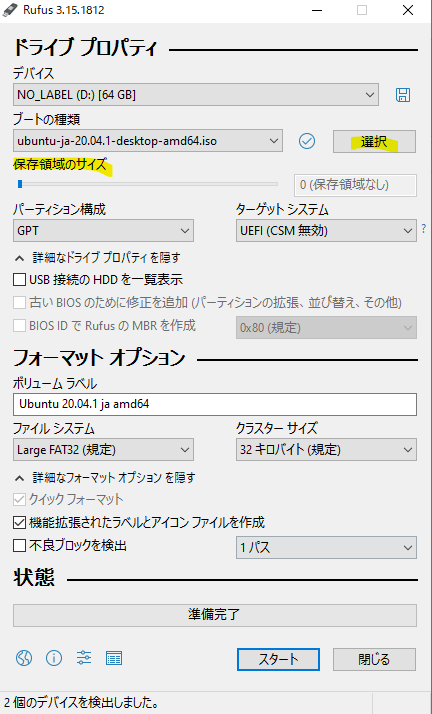
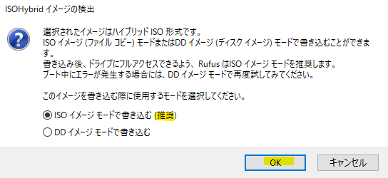

#Ref.1 オペレーティング・システム（OS）¶
Windows¶
最初接触したのシステム。初見としてはなんにも知らなかった。
内蔵のゲーム、マインスイーパーあんまり好きじゃない、逆にピンポールにハマった。
Windows 95はほぼ子供時代の思い。
今はこれらのがMicrosoft社作ったソフトウェアとシステムという事が知った。
これからは雑談より、技術面のメモです。
簡単ヴァージョン紹介¶
いかは知るの部分で今までのシステムの簡単紹介。
| システム | 俺の時代 | リマーク |
|---|---|---|
| Windows 98 | 子供頃のゲーム思い | ゲームしかない！！！ |
| Windows XP | 小学初インストールシステム | 結構使え安い、初インターネットと繋いだ |
| Windows Vista | ほぼ覚えが無いのヴァージョン | システム創作がクソかったらしい。 |
| Windows 7 | 大学時代の友 | 色んなパソコンでインストールした。 |
| Windows 8 /8.1 | 大学時期短時間試した。 | GUIが革新過ぎ、自分は好きけど、あんまり皆の好みじゃないらしい。 |
| Windows 10 | 大学院時期初のinsider挑戦。 | 結構安定性と便利なシステム、コミュニティ向けの方が面白い。 |
インストールメディアの作成¶
Windowsシステムのインストールは元々簡単だけど、今は最も面倒なシステムです。
更新の部分は自分がインストールファイルをパッチしないと大変になったシステムです。
他には、伝統的「Lagacy BIOS」から今流行りの「UEFI」に対して、インストールメディアの制作はちょっと変わった。
今の技術にUEFI BIOSやSecure Bootなどの技術もMicrosoft社が提出された、主にパソコンをWindowsしかインストールできず為に、と一部のウィルス防犯の為に。
UEFIについてはもっとストーレジ大きいなサイスをサポート為に提出の技術。
これから各インストールメディアの作成と対応ヴァージョンの説明。
BIOS¶
Windows 98 から、Windows XP、Windows 7まではだいたいコンパクトディスクに入れてインストールする。
Windows 7の最初期はBIOSのメディアがメインです。
市販からのコンパクトディスクをパソコンに入れて、インストールできます。
もう一個方法は、オンラインでISOファイルをダウンロードして、インストールする。
Windows XPやWindows 7の場合、だいぶのひとはオリジナル「MSDN」のインストールISOファイルをダウンロードし、パッチも自作で入れる。
パッチにはWindows Updates Downloader (WUD)_ という便利なツールがあり、全てインストールが必要な更新ファイルをすべてダウンロードし、
そうして、ISOファイルを編集し、パッチを入れて、Windows内蔵のImageXを使って、パッチをISOに更新する。
Windows XP の場合は、以前は「SpeedXP」という非公式のISOもありました。
Windows 7の場合は、インストールISOをUSBスティックでメディアに制作するツールがあった。
Windows USB/DVD Download Tool という公式リリースしたの便利なツールを使える。
こちらはだいぶ説明：


UEFI¶
現在Windowsのインストールメディアは大体ISOの中にのWIMやESDファイルがメインです。
UEFIのWindowsシステムはWindows 7以後がサポートする、正式的にはWindows 8からサポートする。
Windows 8からは元のWIMフォマットのインストールイメージファイルをESDを変わります。
UEFIのハードウェアはブートメディアに.efiファイルを確認し、そうしてFat32のファイルシステムしか認識できる。
だから、色んな面倒の確認が必要です。
幸い、今は OpenSource の世帯だから、インターネットから色んな便利ツールがあり、こちらで紹介する。
- Windows 8と8.1のお勧め：
方法１、公式サイトから 8.1ISOダウロード できます。直接のISOが入手可能です。
でもこれは絶対最新ヴァージョンでは言えない。
方法２、ESDファイルからのISO作成。ほぼ最新版のメディアが確保可能です。
ESDのダウロードは TechBench by WZT (v4.1.1) というサイトが勧めです。
まずは"type"をESDに選択し、そうして、対応のOSヴァージョンとお好みな言語を選択し、ハードウェアによってx86かx64を選択する。

ESDをダウロードすると、まずはSHA1SUMを確認します。
Warning
SHA1SUM：ファイルの内容確認の一つ方法です。
インターネット多発されたファイルはネット通信か偽リンクが可能ので、ファイルをダウロードすると、
CheckSUMというシステムでファイルの確認がおすすめです。
最も便利と無料な方法は7-ZIP_を使う、内蔵付属のツールを使って確認できます。
確認できると、ESDをインストール可能な形式になるにはもう一個変換ツールが必要です。
それは、DECRYPT-MULTI-RELEASE というツールがおすすめです。
DECRYPT-MULTI-RELEASE直接ダウンロード：DMR直接 ここにアクセス可能です。
ISOを変換の場合は、ダウロードしたツールを解凍する、そうしてESDファイルを同じフォルダに入れる。
次のように実行すると、ISOが作ります：

そうして、作ったISOファイルを最後で RUFUS というツールをUSBに書き込みます。

- Windows 10の作成方法：
方法１、マイクロソフト公式サイトで Windows 10 のディスク イメージ (ISO ファイル) のダウンロード 、もしくは
Windows システムでアクセスの場合、 Windows 10 Update Assistant でEXEファイルをダウンロードし、公式的にダウロードと作成可能です。
方法２、自力作成。
他には、最新版のISOが欲しいけど、マイクロソフト社がリリースしていないという悩みがあれば、 あるグループな人が努力し、開発したのコマンドツールがあります。
そのツールはマイクロソフト社に直接最新版のアップデートとインストールファイルをダウンロードし、ISOファイルを作成します。
UUPというツールで名を付けました。
おすすめのUUPツールは二つのサイトから使用できます：
- UUP dump - https://uupdump.ml/


Buildについては説明いただきます。Cumulative Updateは安全性が優先で、必要な更新をパッチするだけ。
まだ、Feature updateは、安全性と新しい機能もぱっちする。
Architectureはハードウェア・CPUによって、最適のを選択する。

Conversion optionsについて、Component Cleanupは不必要なゴミをクリーニング、ISOはより小さくなれる。
.Net Framework 3.5は、Windows 10以後はデフォルト4.5を実装するだけ、これをチェックしたら、この機能を先にインストール可能になる。
最後はzipファイルをダウンロード、解凍し、スクリプトファイルに実行すると、自動的にダウロードとISOを作成する。
- UUP Generation Project (v2.4.10) [by @rgadguard & whatever127] - https://uup.rg-adguard.net/
どちらでダウロードしたのISOは、RUFUS というツールをUSBに書き込みます。
Warning
ここでは一つ注意点があります
完全な UEFI＋Security Boot にはEFI・Fat32のインストールメディアが必要。
この全ての更新をパッチする場合には、 install.wim ファイルが fat32の4G制限を超えす。
4G以上のinstall.wimにはfat32ファイルシステムに格納できず。
だから、WIMをSWMに分割が必要です。
分割の方法は以下のスクリプトを実行が必要、そうしてISOファイルを再パッケージが必要です。
Dism /Split-Image /ImageFile:install.wim /SWMFile:install.swm /FileSize:4096
システム・ディスク・パーティション¶
伝統型（BIOS）¶
形１
|
形２（おすすめ）
|
|
EFI型（UEFI）¶
形１
|
|
形２
|
|
|
形３
|
|
|
|
Linux¶
インターネットにアクセス可能の子供頃、何時か、Microsoft社が開発したWindowsシステムは実際に有料です。
ライセンスの概念は最初にあんまり無かった。それは、ほぼのWindowsシステムはメーカー制作したのハードウェアと共に買いました。
結局はあるときに、いよいよライセンスやシステム利用の料金と言う概念が得た。
それから、「まさか、この世は有料のシステムしかないでしょうか？」という疑問が来たら、実際にネットで検索した。
そうして、Linuxの扉が開いた。初対面のシステムはUbuntu 8.10でした。インターネットで自力勉強とインストールした。
その後、無料より、実際の意味は改めて認識した。 これはOpen Sourceという概念、と開源ライセンスなど。
システムコアとビルド¶
Linux概念：
自作、組み立て、Openのシステムと、皆（コミュニティー）の力でシステムを作成する。
一人作るは難しいけど、一緒にならいける。そうして一緒にシステムの検証とテストをやる。
コアは、 Linux Kernel を使って、OSの必要な機能を立ち上がる。
便利性と別商売：
コミュニティーだからこそ、好き嫌いがある。 だから、流派との延長も産めれる。
最終的には、ソフトウェア管理ツールによって、Distroとビルドで分離した。
人々は自分の好みに自由で選べる。
- Debain系
- Red Hat系
- Slackware系
- 他（など）
- Arch Linux
- FreeBSDコア
- Android
ダウンロード・Live・とインストールメディア作成¶
ダウロードには各公式サイトにダウロードする。もしくは UNetBootin という便利ツールもあります。
UNetBootin


既知Linuxシステム¶
| OS名 | ソフト管理 | 公式サイト（英語） | ダウロードページ |
|---|---|---|---|
| Ubuntu | apt | https://ubuntu.com/ | https://ubuntu.com/download |
| CentOS | yum | https://www.centos.org/ | https://www.centos.org/download/ |
| RedHat | yum | https://www.redhat.com/ | https://www.redhat.com/en/technologies/linux-platforms/enterprise-linux/try-it |
| Kubuntu | apt | https://kubuntu.org/ | https://kubuntu.org/getkubuntu/ |
| Linux Mint | apt | https://linuxmint.com/ | https://linuxmint.com/download.php |
| Arch Linux | pacman | https://archlinux.org/ | https://archlinux.org/download/ |
| Fedora | dnf | https://getfedora.org/ | https://getfedora.org/workstation/download/ |
| openSUSE | zypper | https://www.opensuse.org/ | https://get.opensuse.org/ |
| FreeBSD | pkg | https://www.freebsd.org/ | https://www.freebsd.org/where/ |
Windowsシステムの場合は RUFUS も勧めです。
同時にLive USBも作成できますし、インストールメディアもできます。
 システム・ディスク・パーティション¶
伝統型（BIOS）¶
Lagacyの基本型：
|
SWAP [swap] |
Lagacyの独立型：
Type 1
|
|
SWAP [swap] |
Type 2
|
|
|
SWAP [swap] |
Type 3
|
|
|
|
SWAP [swap] |
Type 4
|
|
|
|
|
SWAP [swap] |
EFI型（UEFI）¶
UEFIの基本型：
|
|
SWAP [swap] |
UEFIの独立型：
Type 1
|
|
|
SWAP [swap] |
Type 2
|
|
|
|
SWAP [swap] |
Type 3
|
|
|
|
|
SWAP [swap] |
Type 4
|
|
|
|
|
|
SWAP [swap] |
Warning
Linuxでのスワップ（SWAP）空間はメモリ不足の時に臨時用空間。
基本的には作った方が良いです。
サイズはメモリサイズの１．５倍にかける。メモリサイズが小さいの場合は最適に2GBがおすすめ。
MacOS・OSX¶
これはアップル( Apple )社が開発されたシステムです。
一般状況はアップル制作したのハードウェアしか使える。
MacBookから、iMacとか、パソコン・ラップトップ機械までは使える。
最初のシステムは有料で、今は全て無料になります。
一部のハッカーさんはVMware VirtualMachine向けのプラグインを開発し、VMもインストール出来ることも有った。
ここはちょっとVMのも紹介し、メインは公式方法を使う。
大体のヴァージョン紹介¶
自分が知っていたのマックはOSXとの名前から、コードはLeopardと呼ぶ。
今現在がメインのはMacOSのBig Surです。
| 名前・ヴァーション | コード名 | リリース日 |
|---|---|---|
| OS X 10.5 | Leopard | 26 October 2007 |
| OS X 10.6 | Snow Leopard | 28 August 2009 |
| OS X 10.7 | Lion | 20 July 2011 |
| OS X 10.8 | Mountain Lion | 25 July 2012 |
| OS X 10.9 | Mavericks | 22 October 2013 |
| OS X 10.10 | Yosemite | 16 October 2014 |
| OS X 10.11 | El Capitan | 30 September 2015 |
| macOS 10.12 | Sierra | 20 September 2016 |
| macOS 10.13 | High Sierra | 25 September 2017 |
| macOS 10.14 | Mojave | 24 September 2018 |
| macOS 10.15 | Catalina | 7 October 2019 |
| macOS 11 | Big Sur | 12 November 2020 |
VMware Workstation/Playerツール¶
UnlockerというツールはMACシステムをVMに実装可能です。
古いと新しいGitHubレポジトリーでダウロード可能です。
実装方法や内容は自己責任でサイトにご参考ください。
インストールメディアの作成¶
システムメディアのダウロードは直接アップルストアからで入手可能です。
それからのステップは簡単です、ストアからダウンロードしたとか確認すると、次のコマンドでbootable installerのUSBメディアを作成する。
オフィシャルダウロードサイト に参考とダウロードがおすすめです。
Catalina:
1 | sudo /Applications/Install\ macOS\ Catalina.app/Contents/Resources/createinstallmedia --volume /Volumes/<Volume名>
|
Mojave:
1 | sudo /Applications/Install\ macOS\ Mojave.app/Contents/Resources/createinstallmedia --volume /Volumes/<Volume名>
|
High Sierra:
1 | sudo /Applications/Install\ macOS\ High\ Sierra.app/Contents/Resources/createinstallmedia --volume /Volumes/<Volume名>
|
El Capitan:
1 | sudo /Applications/Install\ OS\ X\ El\ Capitan.app/Contents/Resources/createinstallmedia --volume /Volumes/<Volume名> --applicationpath /Applications/Install\ OS\ X\ El\ Capitan.app
|
システム・ディスク・パーティション¶
マックシステムのはとてもシンプルです。アップル社が全てを用意したので、インストールしたいの時は１つのパーティションで大丈夫です。
アップルの内蔵ディスク分割ソフトで大丈夫です。
MACのシステムはGPTがデフォルト。
パーティションの形式はOSの時期によって、HFS+やAPFSがデフォルトでインストールする。
- ハードティースクの構成
| HFS+ / APFS |